Part 2
Passive Key Reminder Unlock (SMK)
1. This function is not performed when vehicle speed is 3km/h or more.
2. When the driver door switch (Assist door switch) = OPEN and driver unlock state (Assist unlock state) are lock state, passive KEY REMINDER signal received at the output ALL DOOR UNLOCK is for 1s.
3. UNLOCK signal is output 3 times as Max (1s-output is excluded) in case LOCK state is held even when UNLOCK signal is output for 1s in (2). (1s cycle: 0.5s ON/OFF)
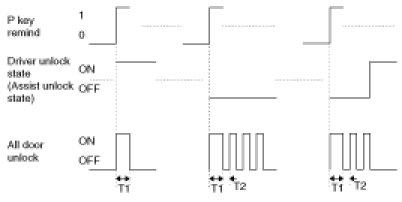
T1 : 1 ± 0.1sec, T2 : 0.5 ± 1sec
Crash Door Unlock
1. When IGN1 = ON, L_CRASH INPUT signal starts to judge ON/OFF from T1(1s), When IGN_KEY_OFF, L_CRASH INPUT signal terminates to judge ON/OFF.
2. After L_CRASH INPUT signal starts to judge ON/OFF and IGN_KEY_ON states , if L_CRASH INPUT is ON then ALL DOOR UNLOCK is output for T2(5s) (CRASH UNLOCK OUTPUT)
* L_CRASH INPUT signal is determined L_CRASH INPUT = ON, when 16ms_LOW / 4ms_HIGH cycle is input 1 time.
* In BCM SLEEP state, L_CRASH INPUT is ignored.
3. After above (2) Section. even if IGN KEY is ON -> OFF during the CRASH UNLOCK output, CRASH UNLOCK is maintained for the remaining time.
4. After above (2) Section. If L_CRASH INPUT is ignored to input again during CRASH UNLOCK output for T2.
5. CRASH UNLOCK output before BCM SLEEP states to the ANY DOOR UNLOCK->LOCK then ALL DOOR UNLOCK output is performed during T2.
6. CRASH DOOR UNLOCK condition, AUTO DOOR LOCK does not function.
7. CRASH DOOR UNLOCK function overrides LOCK / UNLOCK control by other functions.
8. DOOR UNLOCK is outputting and after output, LOCK / UNLOCK request by other function is ignored.
9. After CRASH DOOR UNLOCK, to enter BCM SLEEP states or L_KEY IN = OFF & L_ACC = OFF &L_IGN1 = OFF & L_IGN2 = OFF are became then LOCK / UNLOCK control by the other function is performed.
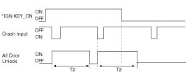
T1 : 5.0 sec
* IGN KEY_ON : ON == KEY IN or ACC ON or IGN1 ON or IGN2 ON
OFF == KEY OUT & ACC OFF & IGN1 OFF & IGN2 OFF
10. L_Crash Input for the input signal ON / OFF judging criteria are the following figure.
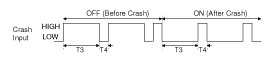
T1 : 1 ± 0.1sec, T2 : 0.5± 0.1sec
Auto Door Lock/unlock Control (User Option)
1. ALL DOOR LOCK signal is output if vehicle speed is 15km/h within T1 under IGN1 ON && Alt L ON. But ALL DOOR LOCK, All DOOR LOCK signal is not output if all DOOR is LOCK or ALL DOOR are FAIL.
2. LOCK signal is output 3 times as Max if either one DOOR is UNLOCK after LOCK signal output in (2).(1s cycle) But, DOOR, which is LOCK from UNLOCK state during 3-time output, is ignored.
3. Relevant DOOR is FAIL if the state is UNLOCK after 3-time output.
4. LOCK signal is output once if the FAIL DOOR is UNLOCK again after the DOOR is LOCK.
5. LOCK signal is output once if locked doors, which are LOCK state after LOCK signal output in (2), are unlocked again. But, LOCK signal is output once for the relevant DOOR even when UNLOCK state continues after LOCK signal output.
6. FAIL DOOR is cleared at IGN switch OFF.
7. AUTO DOOR LOCK function is not performed when CRASH UNLOCK condition is met.
8. AUTO DOOR LOCK function is not performed when set up L_SIDE AIR OPT = ON.
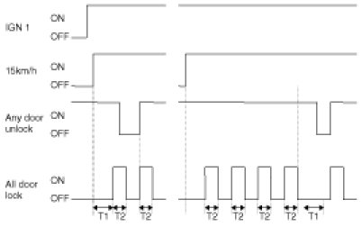
T1 : max 1.5sec, T2 : 0.5 ± 0.1sec
ANY DOOR UNLOCK ON driver Unlock State Unlock or assist Unlock State Unlock or rear left Unlock State or rear right unlock state
ANY DOOR UNLOCK OFF driver Unlock State Lock assist Unlock State Lock and rear left Unlock State and rear right unlock state
Auto Door Lock By Shift Lever Change
1. IGN1 ON & Alt L ON state of 100msec in the close future, and ANY DOOR UNLOCK ANY DOOR UNLOCK ALL DOOR (Driver door SW & Assist door SW & Rear left door SW & Rear right SW) in the conditions when Inhibit P, ON->OFF, ALL DOOR LOCK to the output.
2. AUTO DOOR LOCK function is not performed when CRASH UNLOCK condition is met.
Auto Door Unlock By Key In Condition
1. ALL DOOR UNLOCK signal is output at IGN KEY IN->OUT. But, UNLOCK state that is ALL DOOR to UNLOCK does not output.
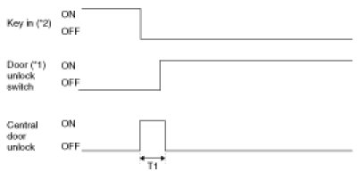
T1 : 0.5 ± 0.1sec
*1 ON(UNLOCK) : Driver Unlock State or assist Unlock State or rear left Unlock state or rear right unlock state = UNLOCK
OFF (LOCK) : Driver Unlock State & assist Unlock State & rear left Unlock state & rear right unlock state = LOCK
*2 KEY IN ON : Key in switch ON or ACC =1 or IGN1 ON or IGN2 ON
KEY IN OFF : Key in switch OFF and ACC =0 and IGN1 OFF and IGN2 OFF
Auto Door Unlock (Only SMK)
1. Under under ANY DOOR LOCK, ALL DOOR UNLOCK signal is output at ACC ON->OFF.
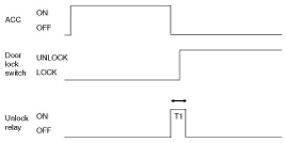
T1:0.5s ± 0.1s
Auto Door Unlock By Driver Door Unlock State (User Option)
1. In Lock states of ANY DOOR (C_DRV Unlock State || C_AST Unlock State || C_RL Unlock State || C_RR Unlock State), if C_DRV Unlock State is LOCK -> UNLOCK, ALL DOOR UNLOCK is output one time for T1.
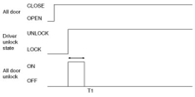
T1:0.5s ±0.1s
Auto Door Unlock By Shift Lever Change
1. ALL DOOR CLOSE & ANY DOOR LOCK state is the state of IGN1 & Alt L ON to OFF->ON when in Inhibit P after 300msec, CENTRAL DOOR UNLOCK is the output.
Trunk Release Relay Control
Trunk Release Relay Control Data Flow
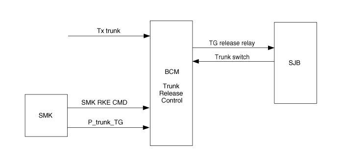
Trunk Release Relay Control
1. If TX Trunk is received, C_TG Release Rly is ON for T1. (Non-SMK)
If C_SMKRKECMD Trunk signal is received, C_TG Release Rly is ON for T1. (SMK)
2. Trunk control by TG Release Rly SW is mechanical operation.
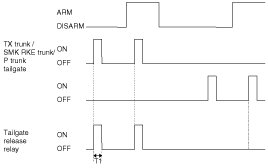
T1 : 500 ± 100msec
ATM Shift lock control(AT)
Data Flow
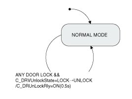
1. In L_IGN1 ON, C_Inhibit P ON or C_Inhibit N ON condition, if L_Brake SW input is ON, O_ATM SOL output is ON to makes moving condition of SHIFT LEVER.
2. In L_IGN1 ON, vehicle speed is less than 7KPH and C_Inhibit D ON conditions, if L_Brake SW input is ON, O_ATM SOL output is ON to makes moving condition of SHIFT LEVER.
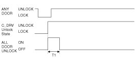
Key Interlock Control
Data Flow
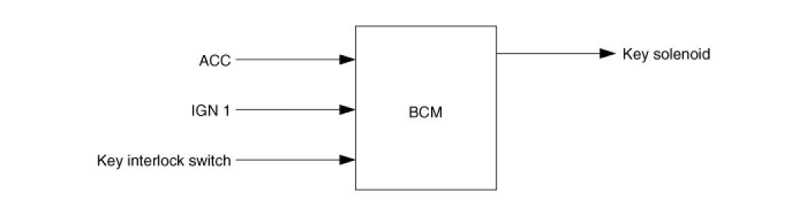
1. Key solenoid to the output of the ON KEY to make the subject does not fall. (If IGN1 ON or ACC subject to the key Interlock switch input is OFF.)
2. In addition to the above conditions, the KEY OFF key solenoid output to fall out, to make conditions.
3. Key solenoid output OFF -> ON operation, 0.9sec ~ 1.5sec for the 7 - 10V and the behavior, then the voltage 6 - 9V to maintain.
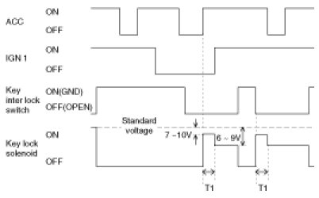
T1 : 0.9 - 1.5sec
Tail Lamp Function In/out
Tail Lamp Function Block Diagram
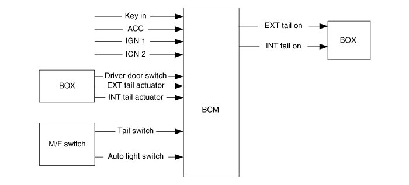
Tail lamp function In/Out List
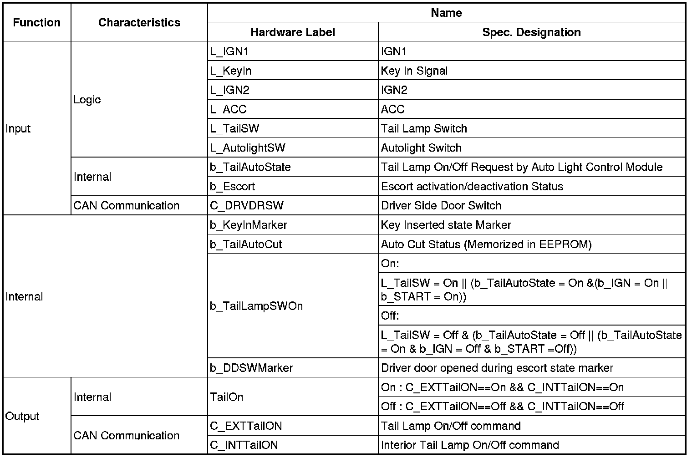
Function Description
- General Function Condition
In BATTERY ON and Tail Lamp is off state, if user turns on the Tail Lamp switch (Tail switch ON), Tail Lamps are turned on.
1. Tail Auto Cut Function Condition
The "Tail Auto Cut" strategy ensures that Tail lamps are turned off even if a driver forgets to turn them off. When the Tail lamp is turned on by Tail lamp switch, after key insertion , and if a user removes key and opens the driver side door(or vice versa), the Tail lamps are automatically turned off. While "Tail Auto Cut" function is active, if a user turns off the Tail lamp switch or inserts key, "Tail Auto Cut" function will be deactivated and Tail lamps can be turned on.
NOTE:
- "Tail Auto Cut" state is memorized in ECU, so even if battery reset, this state is not erased.
- During the activation of Escort function, no Tail Auto Cut mode is possible and it is only after escort function deactivation that Tail Auto Cut mode can be applied.
(1) CAN signal Tail Activity Condition
When tail lamp output condition is met, Tail Lamp activity CAN data (EXT Tail_Act & INT Tail Act) is also turned on. When tail lamp output condition is not met, Tail Lamp activity CAN data (EXT Tail Act & INT Tail Act) is also turned off.
(2) Internal signal Tail Activity Condition
When tail lamp output is on, internal signal Tail Lamp activity (Tail Lamp) is also turned on.When tail lamp output is off, internal signal Tail Lamp activity (Tail Lamp) is also turned off.
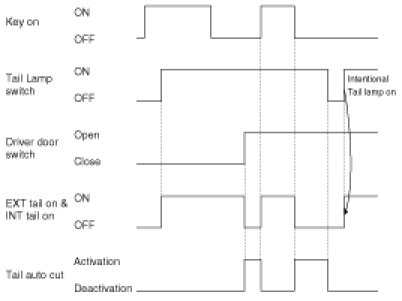
2. HEAD LAMP CONTROL
(1) Overview Description
This function describes the following features
A. Turn on and off Head Lamp Low by Head Lamp Low Switch input.
B. Turn on and off Head Lamp Low by Escort Function.
C. Turn on and off Head Lamp Low by Auto Light Control Request.
D. Turn on and off Head Lamp High by Head Lamp High Switch input.
E. Turn on and off Head Lamp High and Low by Passing Switch Input.
F. Output control of Head Lamp Low.
G. Output control of Head Lamp High.
H. Output control of Head Lamp High Indicator.
I. Output control of Head Lamp control for CANADA DRL.
Head Lamp Function IN/OUT
1. Head Lamp Function Block diagram
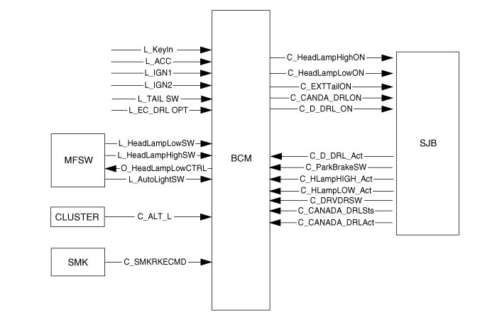
Head Lamp Function In/Out List
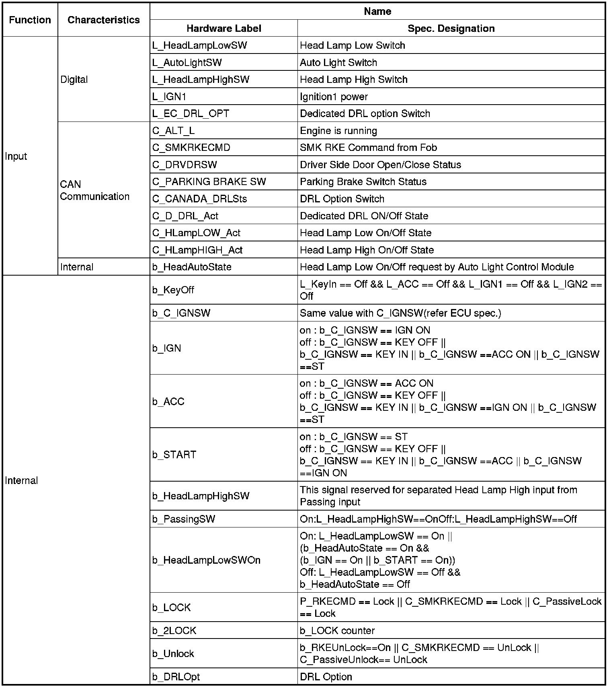
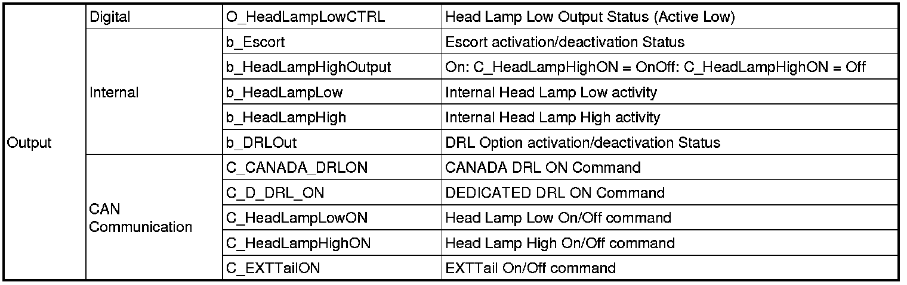
2. Head lamp low signal control
A. Head Lamp Low control output is ON if HEAD LAMP LOW output is ON by 'Head Lamp Low switch ON ' or 'AUTO LIGHT function'.
B. Head Lamp Low control output is OFF when HEAD LAMP LOW output is ON->OFF.
3. Head lamp high control
Head Lamp High input and Head Lamp Passing input by M/F is Head Lamp High switch processing for single input same MULTI-FUNCTION WIRING DESCRIPTION as Head Lamp High switch only input.
A. Head Lamp High Input
When Head Lamp High switch ON that in IGN2 ON and Head Lamp Low control output is ON by IMP, Head Lamp High is consider as input.
B. Head Lamp Passing Input
When Head Lamp High switch ON that in IGN2 ON and Head Lamp Low control output is OFF, Head Lamp Passing is consider as input.
4. Multi-function wiring description
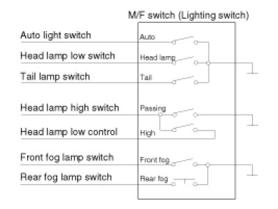
Function Description
1. Head Lamp Low Control
In IGN terminal State (IGN ON), if turn on the Head Lamp LOW switch(Head Lamp Low switch ON),
Head Lamp LOW outputs are turned on (Head Lamp Low ON).
When Tail lamp Off and headlamp Off conditions are satisfied at the same time, Head Lamp LOW and Tail LAMP turned off simultaneous immediately.
2. Head Lamp High Control
In IGN terminal State(IGN ON) and Head Lamp Low switch On(Head Lamp Low switch ON), if turn on the Head Lamp High switch(Head Lamp High switch ON), Head Lamp High Outputs are turned on (Head Lamp High ON).
3. Passing Control
In IGN terminal State(IGN ON), If Head Lamp Passing switch Input(Head Lamp High switch ON & Head Lamp Low control OFF) is detected then Head Lamp High Output(Head Lamp High ON) are turned on and Head Lamp Low Output(Head Lamp Low ON) at the same time.
4. Canada DRL
A. If alternator level is high(ALT L=On), BCM activates Canada DRL functionality and turns on the Head lamp high (CANADA DRL=On).
B. Deactivation if:
(1) Head lamp low On request by Head lamp switch or auto light head lamp Low control or
(2) Head high On request by passing switch or
(3) Parking brake switch On
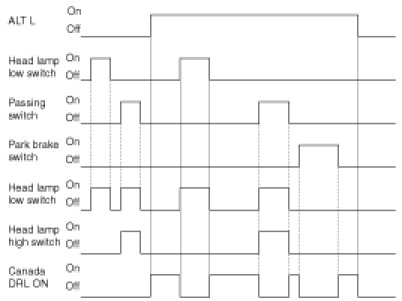
5. Escort Function
After user generates the call of head lamp low light(Head Lamp Low switch On), if switch off ignition(IGN Off and START Off), and then keep Head Lamp Low Output On (Head Lamp Low ON)state during 20min.
And after open and close driver side door(Driver door switch ON -> Driver door switch Off), user will have consequently lighting of head lamp low(Head Lamp Low ON) during only 30sec.
During active "Escort Function", if receive Lock request 2 times (2 LOCK) or cancel the lighting request of head lamp low (Head Lamp Low switch Off & Auto Light switch Off), this function is released.
Lock request counting for 2 times (2 LOCK) is each follow cases:
(1) RKE CMD == Lock
(2) SMK RKE CMD == Lock
(3) Passive Access Lock== Lock
If open the Driver door(Driver door switch ON) or close(Driver door switch Off), former lock counter is cleared, and start new 2 times lock counting.
6. Head Lamp Welcome Function
"Multifunction switch head lamp or auto light position and lock stated, if remote unlock, and then keep head lamp output on state during 15second.Lighting state, if remote lock and unlock, immediately light turn off."
NOTE:
- While escort function is activated, Tail lamp is keeping the turn on state and does not go to Auto cut and after finish escort state and user removes key, it can go Auto cut mode.
- While the "Escort Function" is activated by 'Head Lamp Low Switch', if change from 'Head Lamp Low Switch' to 'Lamp Auto Switch', "Escort Function" is deactivated, because Lamp Auto mode is 'Lamp Off' condition.
- While the "Escort Function" is activated by 'Lamp Auto Switch', if change from 'Lamp Auto Switch' to 'Head Lamp Low Switch', "Escort Function" is keeping the activation state, because of 'Head Lamp On' condition.
- After IGN terminal off 20 minute timers is started, but as soon as door is opened and closed then 30sec timer is engaged.
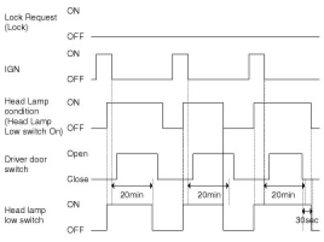
Auto Light Control
1. Overview Description
This function describes the following features.
A. Input detection by Auto Light Sensor.
B. Generate Auto Light Out Status data.
C. Send Auto Light Out Status.
D. Tail Lamp Control by Auto light Mode.
E. Head Lamp Low Control by Auto light Mode.
F. AV Tail Control by Auto Light sensor level.
Auto Light Mode State Diagram is based on Auto Light Sensor's level.
Power condition of Auto Light Action.
G. When CAN Wake-up, ACC, IGN, START terminal states, Auto Light Sensor operates.
Variant
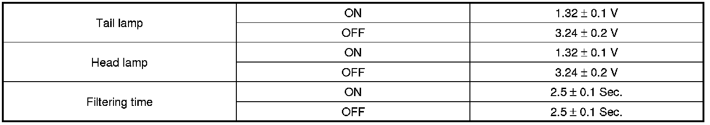
Auto Light Control Function In/out
1. Auto Light Control Function Block Diagram
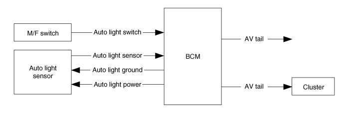
Auto Light Control Function In/Out list
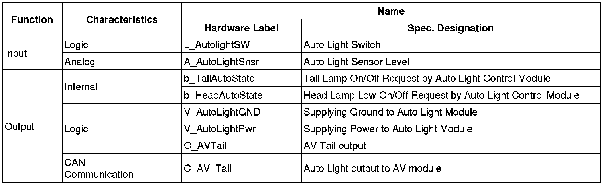
In Export Version, Tail Lamp, Head Lamp Low Control
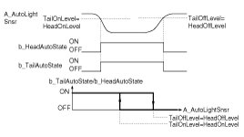
AV tail control
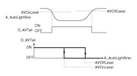
NOTE:
1. During above ON/Off Filtering times, if a detected sensor value doesn't satisfy the ON/Off condition, filtering time counter is cancelled. When Tail lamp Off and Headlamp Off conditions are satisfied at the same time, Head Lamp Low and Tail Lamp are turned off simultaneous.
2. These Filtering value is calibration value so it's changeable.
3. In ACC terminal state, Tail Lamp and Head Lamp Low filtering times are not used; AV Tail Out filtering time is used even in ACC terminal state.
4. These filtering times shall have an error tolerance of +/-100msec
Continuous Turn ON Mode
CASE(1) : At the time that Tail Lamp and Head Lamp Low switch position are changed from manual ON to Auto ON position, if intensity of light measured by Auto light sensor that is already calculated satisfies the Head Lamp Low ON condition, Head Lamp Low is turned ON continuously without fluctuation
CASE(2) : In the hysteresis range between level On and level Off, the current state of Lamp is kept.
CASE(3) : As soon as the MFSW is changed to Off position, the lamp is turned Off immediately (Without Off delay times.)
NOTE:
Only in the terminal states of IGN and START, the Auto Light control functions of Tail lamp and head Lamp Low outputs can be active.
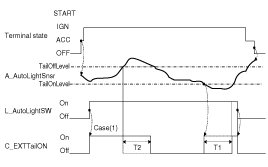
Front Fog Lamp Control
1. Overview Description
This function describes the following features
A. Turn on and off Front Fog Lamp by Front Fog Lamp switch input.
B. Versus variant (NA, Non-NA), function description
Front Fog Lamp Function In/out
1. Front Fog Lamp Function Block Diagram
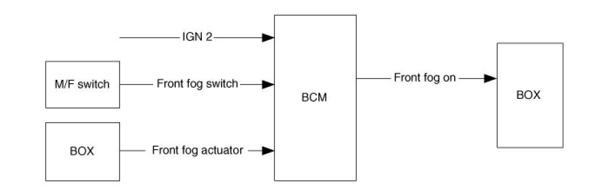
Front Fog Lamp Function In/Out List
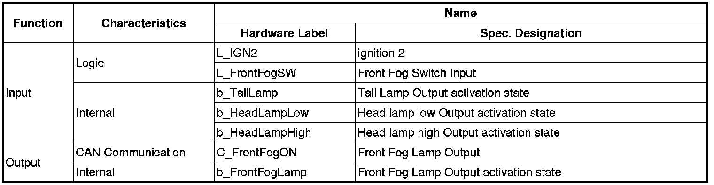
2. Function Description
(1) In case of (IGN2=ON) & (Head Lamp Low=ON) & (Head Lamp High=Off), if Front fog lamp switch input is detected (Front Fog SW=On), Front fog lamp output (Front Fog ON=On) is turned ON.
(2) If fails to activate front fog lamp output, indicator (Front Fog IND) is also turn off.
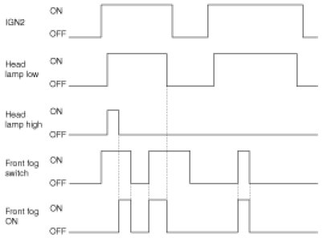